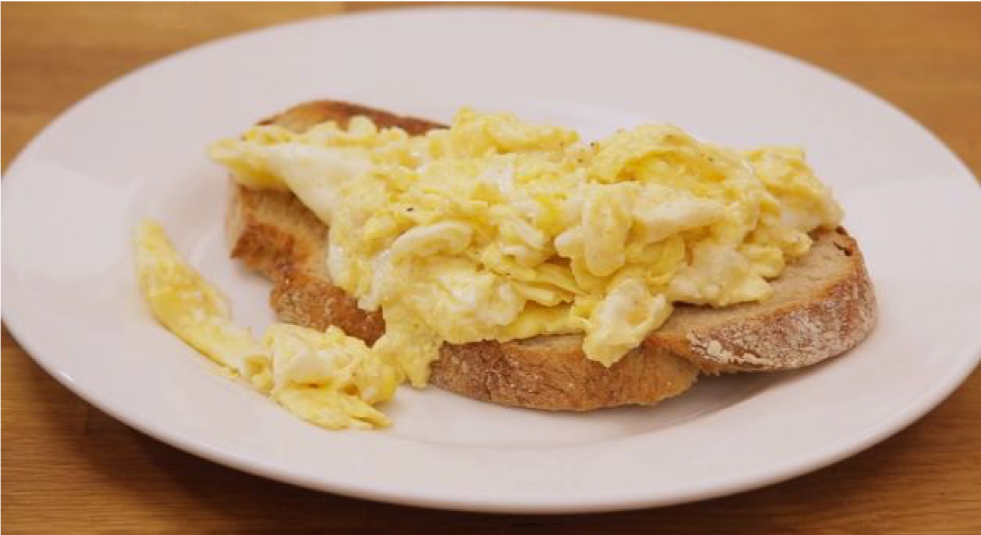

roerei
Iedereen moet op z’n minst eens ei kunnen bakken. Hier leer je hoe.

Afbeelding 1 (bron: bron afbeelding)
Ingrediënten
Methode
- Smelt de boter in een pan op een mild vuur.
- Klop de eieren in een kom voorzichtig door elkaar.
- Wanneer de boter gesmolten is, voeg je het eimengsel toe.
- Na ongeveer 20 seconden roer je het geheel los.
- Zo nu en dan wat los roeren tot het langzaam verder bakken.
- Serveer op een voorverwarmd bord.